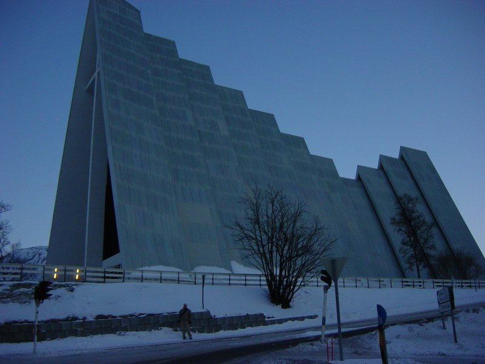
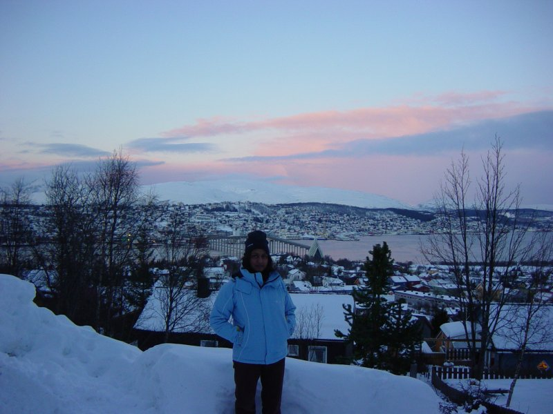

Had breakfast at about 8:00am. The breakfast at the Thon Polar is excellent.
We then walked to tourist information and booked a coach and coastal steamer trip for Sunday night. This was 450 Kr each.
We then took a walk over the bridge (15 mins) past the Arctic Church and then up the mountain for a great view of tromso stopping at the local spar for a few nibbles along the way.

Walked back via Storget shops and bought ski gloves and googles. Stopped for a (free) coffee at our hotel. Ate at Steakers on the harbour at 3pm. Nice atmosphere in this restaurant and a nice view of the harbour and mountains from our table. Very popular restaurant! I had fisk souppe and Yamini had salad for starter. For main we had steak and pepper sauce and potatoes. Also had a creme brulee and icecream and choc sauce. Total was 774kr (�65) inc a beer and a coke.
Walked back to hotel to chill out until it was time to go out later.
Went out about 8:30pm and walked around town. Started snowing heavily at about 9:30pm. We walked over bridge in hope of escaping the snow but it followed us. We don’t give up easily but conceded defeat about 11pm. Had a couple of free coffees in the hotel before turning in.
{kind=link}
{kind=link}